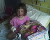
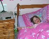

Welcome to Poppy's Home
Page.
Poppy Francesca Carpenter was born at 17.49 on
8th June 2001.
She weighed 650 grams, or 1lb 7oz.
Click on the thumbnails below to see some pictures
of her. Previous entries are at the bottom. We will update her page regularly.
Thank you to everyone for your support - we appreciate
it. Sharon and Mike
View Poppy's guest book.
4th September 2008
Poppy was 7 in June and started school this week in the junior class - she's one of the "big kids" now - hard to believe! She's doing well at school and is very good at reading. She had a hearing test earlier in the year and the results were fine. Her eyesight has stabilised and she should be discharged from the Opthalmist on her next visit. She's full of energy and a very happy girl.
30th June 2007
Poppy is now six years old! She recovered well from her operation, and it was a great success! She has stopped her antibotics which she had been taking for about 18 months, and has had no problems at all.
20th October 2006
On Tuesday 17th Poppy went to Carmarthen Hospital to have her adenoids and tonsils removed. This will help improve her breathing at night. After the initial operation she started loosing blood and had to go into theatre again to have the wounds cauterised. The doctors also put a swab in her throat and down her nose which caused her a great deal of distress when she awoke. Eventually this was removed but the whole ordeal knocked her for six as you might imagine. The following day she she was quite unwell and could not eat anything until the evening, when she managed to keep down some food. She made a remarkable recovery overnight and came home on Thursday afternoon. She has to take antibiotics and also painkillers, although she seems to be coping ok most of the time. She will be going back to school in 2 weeks.

21st June 2006
Poppy was 5 last week! Where has the time gone? She is enjoying school and life in general. She can speak Welsh and is learning to read. She loves singing and is always singing a song of some description. Last week she had a blood oxygen level monitor on her while she slept. She has trouble breathing when she is asleep and the results showed that her oxygen level was going down to 79% at some points. She will be seeing the Ear, Nose and Throat consultant in a couple of weeks so we are waiting to hear what he has to say...

8th June 2005
11th October 2004
8th June 2004
11th June 2002
9th-15th June 16th-22nd June 23rd-30th June 1st-7th July 8th-14th July
15th-21st July 22nd-28th July 29th July-4th August 5th-11th August
12th-18th August 19th-25th August 26th August-1st September
2nd-8th September 9th-15th September 16th-22nd September 23th-29nd September 30th September-6th October 7th-14th October
Today Poppy had her fourth birthday. She has had a busy time since her last update. School is going well for her, although she finds it difficult to 'fit in' because she is a lot smaller than the other children in her class. She is developing well in all areas, however. In March she had her annual checkup for her heart op. which was declared a success. Last month she also won a bronze medal in the 'Race the Train' event, where the children have to run against the train which passes the school playing field - pretty impressive! She has also had to cope with her parents' separation and divorce. She is developing a wicked sense of humour, and is always keen to make us laugh - quite a clown, in fact! Poppy we love you! >
Poppy started school last month! She is attending every morning - she will start full time next September. The school is taught mostly in Welsh. Poppy can already count to ten in Welsh and say other words. She is really enjoying it and is certainly ready for the challenge!
Poppy is three years old today. She wanted a Barbie doll like her sister's and some things for her train set, but the present she really loved was her digger, and that was the one she played with all day and every day since! Poppy is very well and really enjoying Playgroup. Her speech is really excellent now, in fact she communicates very well in all ways. Earlier this year she had a catheter procedure at Liverpool's Alder Hey Hospital to close the PDA valve in her heart. We are all very relieved that this operation is out of the way. It had originally been planned for the Christmas week in 2003, after having been diagnosed as serious by the Cardiac Paediatrician based at Alder Hey. He felt that it needed to be closed quickly because of the high blood pressure in her lungs. It is amazing how much more sustained her energy is now. She is also not getting chesty any more.
We have been seeing the Opthalmist every 6 weeks since Poppy was 1 year old and her sight is improving. She has recently had a change in her prescription because her Stigmatism has improved. I think that Cranial Osteopathy has helped this. She has been seeing a Chiropractor since she was in hospital. We are continuing to patch her left eye to improve the strength of the right one, but her squint is pretty much non-existent now.
We will be seeing the Cardiac Paediatrician in February to ensure that Poppy's Cardiac procedure continues to be successful and then Poppy will be discharged from all Specialist registers (except for her sight). Whoopie!
Poppy is a year old! she had her first birthday on Saturday and we invited the other children who were in the unit with her. Everyone enjoyed catching up and it was good to see the other children doing so well. Poppy has been wearing glasses for about a week now. She is very shortsighted in her right eye but the left eye is not so bad. She will have to wear an eyepatch over her good eye to try and strengthen the weak eye. She can sit up on her own now and is learning to crawl - but only backwards at the moment! The last time she was weigned she was 15lb and she has certainly grown since then. The doctors are pleased with her progress and we hope that the worst is behind her now. Pictures of her birthday are here. Pictures of her christening are here.
Weekly Archive